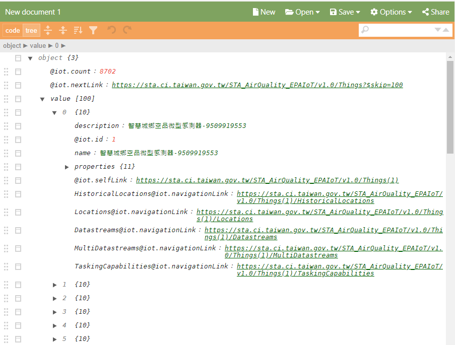

作業1
下載環保署國家空品測站,API網址json檔 Datastreams.json
https://github.com/jc33tw/course/tree/main/D05/Datastreams.json
作業2
下載環保局測站位置的資料 Things.json
https://github.com/jc33tw/course/tree/main/D05/Things.json
作業3
內容如附圖,有0-99個感測器資料
